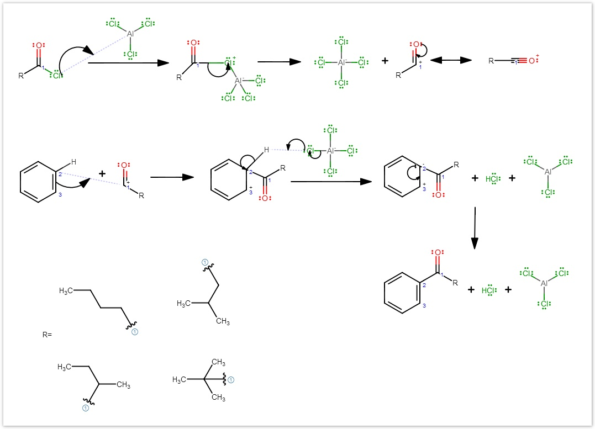

Marvin JS User's Guide
Table of Contents (Start)
Reactions
Reaction
Drawing reactions
In Marvin JS there is an option to draw a reaction by the Reaction tool buttons.
You can draw simple (straight) reaction arrows, or you can use resonance (two-headed) arrows to display the mesomeric structures of a compound by choosing the appropriate arrow tool.
Note that all of the functions below are only reachable when one of the Reaction tools is active.
If you would like to save your structures as a "reaction file" there are some restrictions. For more information see the Technical details panel below.
The "+" signs between the reactant or product molecules can be added manually by left clicking on the chosen place on the canvas and you can remove the reaction operators by left-clicking on them repeatedly.
Alternatively, if you select the reactant or the product side with one of the Selection tools, and then press the Reaction tool button, the "+" signs will be added automatically between each reactant or product molecule. However, it works only if the selection does not contain other "+" signs or a reaction arrow.
The Reaction operator is movable by dragging them on the canvas.
You can draw arrows by left-clicking on the start point of the arrow, dragging towards the products and releasing the mouse button when the arrow length reaches the proper size. Clicking on the middle of the arrows deletes the arrow.
Multistep reactions and graphical charts also can be displayed by the Reaction tool.
If the structure on the canvas contains only a single step reaction, then this structure will be automatically exported as a "reaction file" by Marvin JS. This means that in the exported file there will be separate blocks for reactants, products and agents making it possible to use the exported file in a reaction search. In this case, only those file formats are available in the Export dialog which support reactions (MRV, RXN, SMILES, CXSMILES, SMARTS, CXSMARTS, CML, RXN V3000, SDF, CSSDF, CDX, SKC).
Please note that the conversion of the structure to a reaction file happens on server side and requires the reaction converter webservice to be available
When the structure contains more than one reaction or a multistep reaction (or when the reaction converter webservice is not available), the structure will not be converted to a reaction file. In this case, there will not be reactant/product/agent blocks in the exported files and the "+" signs and arrows of the reaction(s) will be exported as graphical objects.
Mapping Atoms
Marvin JS provides the option to set map numbers to individual atoms. Unlike atom indices, map numbers remain constant during editing the molecule. Mapping can be useful if you want to identify corresponding atoms in the reactant and product side of a reaction.
Atom map visibility should be turned on to display the atom map numbers.
There are two ways for adding map numbers to the atoms.You can add map number to every single atom manually from the Atom properties dialog or if you would like to map the same atom with the same number, you can map these atoms by dragging from atom to atom when the Reaction tool is active.
Reaction tool mapping logic
-
Creating the atom map number
When there is no map number on any of the atoms, both of the atoms get the smallest number which isn't represented on the canvas. -
Adding the atom map number
When there is an atom map on the former atom, the latter one gets the same number as the other atom has.
When there is an atom map on the latter atom, the former atom gets the same number as the latter atom has. -
Overwriting the atom map number
Dragging from an atom which has already an atom map number to another atom with an atom map, the latter atom will get the same number as the former atom has. -
Deleting the atom map number: Dragging from an atom with an atom map number to another atom with the same number results that both of the map numbers will be deleted from the canvas.
Reaction Mechanisms
Marvin JS supports the detailed display of reaction mechanisms by using electron flow arrows (or mechanism arrows) to describe the formation and breaking of chemical bonds. You can use single and double electron flow arrows for representing each elementary step in a complex mechanism.
You can read a detailed description about using electron flow arrows in Marvin JS.
